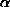

Algorithms: Spectroscopic Redshift and Type Determination
The spectro1d pipeline analyzes the combined, merged
spectra output by spectro2d and determines object
classifications (galaxy, quasar, star, or unknown) and redshifts; it
also provides various line measurements and warning flags. The code
attempts to measure an emission and absorption redshift independently
for every targeted (nonsky) object. That is,
to avoid biases, the absorption and emission codes operate
independently, and they both operate independently of any target
selection information.
The spectro1d pipeline
performs a sequence of tasks for each object spectrum on a plate: The
spectrum and error array are read in, along with the pixel
mask. Pixels with mask bits set to FULLREJECT,
NOSKY, NODATA, or BRIGHTSKY are
given no weight in the spectro1d routines. The continuum
is then fitted with a fifth-order polynomial, with iterative rejection
of outliers (e.g., strong lines). The fit continuum is subtracted from
the spectrum. The continuum-subtracted spectra are used for
cross-correlating with the stellar templates.
Emission-Line Redshifts
Emission lines (peaks in the one-dimensional spectrum) are found by
carrying out a wavelet transform of the continuum-subtracted spectrum
fc( ):
):
where g(x; a, b) is the wavelet (with
complex conjugate ) with translation and scale parameters a and
b. We apply the à trous wavelet (Starck,
Siebenmorgen, & Gredel 1997). For fixed wavelet scale b,
the wavelet transform is computed at each pixel center a; the
scale b is then increased in geometric steps and the process
repeated. Once the full wavelet transform is computed, the code finds
peaks above a threshold and eliminates multiple detections (at
different b) of a given line by searching nearby pixels. The
output of this routine is a set of positions of candidate emission
lines.
This list of lines with nonzero weights is matched
against a list of common galaxy and quasar emission lines, given in this line list, many of which were measured
from the composite quasar spectrum of Vanden Berk et al.(2001; because
of velocity shifts of different lines in quasars, the wavelengths
listed do not necessarily match their rest-frame values). Each
significant peak found by the wavelet routine is assigned a trial line
identification from the common list (e.g., Mg II) and an associated trial redshift. The
peak is fitted with a Gaussian, and the line center, width, and height
above the continuum are stored in HDU 2 of the spSpec*.fits files as parameters wave,
sigma, and height, respectively. If the code
detects close neighboring lines, it fits them with multiple
Gaussians. Depending on the trial line identification, the line width
it tries to fit is physically constrained. The code then searches for
the other expected common emission lines at the appropriate
wavelengths for that trial redshift and computes a confidence level
(CL) by summing over the weights of the found lines and dividing by
the summed weights of the expected lines. The CL is penalized if the
different line centers do not quite match. Once all of the trial line
identifications and redshifts have been explored, an emission-line
redshift is chosen as the one with the highest CL and stored as
z in
the spSpec*.fits emission
line HDU. The exact expression for the emission-line CL has been
tweaked to match our empirical success rate in assigning correct
emission-line redshifts, based on manual inspection of a large number
of spectra from the EDR.
The "measured lines" HDU
2 also gives the errors,
continuum, equivalent width, 2, spectral index, and
significance of each line. We caution that the emission-line
measurement for H should only be used if < 2.5.
The "found" lines in HDU1 denote only those lines used to measure the
emission-line redshift, while "measured" lines in HDU2 are all lines
in the emission-line list measured at the redshifted positions
appropriate to the final redshift assigned to the object.
A separate routine searches for high-redshift (z > 2.3)
quasars by identifying spectra that contain a Ly forest signature: a broad emission line with more
fluctuation on the blue side than on the red side of the line. The
routine outputs the wavelength of the Ly emission line; while this allows a determination of
the redshift, it is not a high-precision estimate, because the Ly line is intrinsically broad and affected by Ly absorption. The spectro1d pipeline
stores this as an additional emission-line redshift.
If the highest CL emission-line redshift uses lines only expected
for quasars (e.g., Ly, C IV, C III], then the object is
provisionally classified as a quasar. These provisional
classifications will hold up if the final redshift assigned to
the object (see below) agrees with its emission redshift.
Cross-Correlation Redshift
The spectra are cross-correlated with stellar, emission-line
galaxy, and quasar template spectra to determine a cross-correlation
redshift and error. The cross-correlation templates are obtained from
SDSS commissioning spectra of high signal-to-noise ratio and comprise
roughly one for each stellar spectral type from B to almost L, a
nonmagnetic and a magnetic white dwarf, an emission-line galaxy, a
composite LRG spectrum, and a composite quasar spectrum (from Vanden
Berk et al. 2001). The composites are based on co-additions of 2000 spectra each. The template redshifts are
determined by cross-correlation with a large number of stellar spectra
from SDSS observations of the M67 star cluster, whose radial velocity
is precisely known. See the cross-correlation templates.
When an object spectrum is cross-correlated with the stellar templates, its found emission lines are masked out, i.e., the redshift is derived from the absorption features. The cross-correlation routine follows the technique of Tonry & Davis (1979): the continuum-subtracted spectrum is Fourier-transformed and convolved with the transform of each template. For each template, the three highest cross-correlation function (CCF) peaks are found, fitted with parabolas, and output with their associated confidence limits. The corresponding redshift errors are given by the widths of the CCF peaks. The cross-correlation CLs are empirically calibrated as a function of peak level based on manual inspection of a large number of spectra from the EDR. The final cross-correlation redshift is then chosen as the one with the highest CL from among all of the templates.
The cross-correlation redshift is stored as z in the
cross-correlation redshift
HDU.
Final Redshifts and Spectrum Classification
The spectro1d pipeline assigns a final redshift
to each object spectrum by choosing the emission or cross-correlation
redshift with the highest CL and stores this as z in the
spSpec*.fits primary header. A
redshift status bit mask (zStatus)
and a redshift warning bit mask (zWarning)
are stored. The CL is stored in zConf spSpec*.fits primary
header. Objects with redshifts determined manually (see below)
have CL set to 0.95 (MANUAL_HIC set in
zStatus), or 0.4 or 0.65 (MANUAL_LOC set in
zStatus). Rarely, objects have the entire red or blue
half of the spectrum missing; such objects have their CLs reduced by a
factor of 2, so they are automatically flagged as having low
confidence, and the mask bit Z_WARNING_NO_BLUE or
Z_WARNING_NO_RED is set in zWarning as
appropriate.
All objects are classified as
either a quasar, high-redshift quasar, galaxy, star, late-type star,
or unknown. If the object has been identified as a quasar by the
emission-line routine, and if the emission-line redshift is chosen as
the final redshift, then the object retains its quasar
classification. If the object has a final redshift z >
2.3 (so that Ly is or should be present in the
spectrum), and the Ly redshift extimator agrees on this, then it is
classified as a high-z quasar. If the object has a redshift
cz < 450 km s-1, then it is classified as a
star. If the final redshift is obtained from one of the late-type
stellar cross-correlation templates, it is classified as a late-type
star. If the object has a cross-correlation CL < 0.25, it is
classified as unknown.
There exist among the spectra a small number of composite objects. Most common are bright stars on top of galaxies, but there are also galaxy-galaxy pairs at distinct redshifts, and at least one galaxy-quasar pair, and one galaxy-star pair. Most of these have the zWarning flag set, indicating that more than one redshift was found.
The zWarning bit mask mentioned above records problems
that the spectro1d pipeline found with each spectrum. It provides
compact information about the spectra for end users, and it is also
used to trigger manual inspection of a subset of spectra on every
plate. There is a zWarning bits
table. Users should particularly heed warnings about parts of the
spectrum missing, low signal-to-noise ratio in the spectrum,
significant discrepancies between the various measures of the
redshift, and especially low confidence in the redshift
determination. In addition, redshifts for objects with zStatus = FAILED
should not be used.
Spectral Classification Using Eigenspectra
In addition to spectral classification based on measured lines,
galaxies are classified by a Principal Component Analysis (PCA), using
cross-correlation with eigentemplates constructed from SDSS
spectroscopic data. The 5 eigencoefficients and a classification
number are stored in eCoeff and eClass,
respectively, in the SpecObj table in the CAS and the
spSpec files (beware of a shift in the index of the
eigencoefficient between the files and the database -
eCoeff1 in the spSpec file turns into
eCoeff_0 in the CAS database). eClass, a
single-parameter classifier based on the first two expansion
coefficients eclass = atan(-eCoeff2/eCoeff1), ranges from
about -0.35 to 0.5 for early- to late-type galaxies.
The galaxy spectral classification eigentemplates are created from
a sample of spectra numbering approximately 200,000. The eigenspectra
are an early version of those created by Yip
et al. (AJ 2004, 128, 585) (note the opposite sign convention for
this classification angle in the paper as compared to the templates
used here).
Manual Inspection of Spectra
A small percentage of spectra on every plate are inspected
manually, and if necessary, the redshift, classification,
zStatus, and CL are corrected. We inspect those spectra
that have zWarning or zStatus indicating
that there were multiple high-confidence cross-correlation redshifts,
that the redshift was high (z > 3.2 for a quasar or z >
0.5 for a galaxy), that the confidence was low, that signal-to-noise
ratio was low in r, or that the spectrum was not measured. All
objects with zStatus = EMLINE_HIC or
EMLINE_LOC, i.e., for which the redshift was determined
only by emission lines, are also examined. If, however, the object has
a final CL > 0.98 and zStatus of either
XCORR_EMLINE or EMLINE_XCORR, then despite
the above, it is not manually checked. All objects with either
specClass = SPEC_UNKNOWN or
zStatus = FAILED are manually
inspected.
Roughly 8% of the spectra in the EDR were thus inspected, of which about one-eighth, or 1% overall, had the classification, redshift, zStatus, or CL manually corrected. Such objects are flagged with zStatus changed to MANUAL_HIC or MANUAL_LOC, depending on whether we had high or low confidence in the classification and redshift from the manual inspection. Tests on the validation plates, described in the next section, indicate that this selection of spectrafor manual inspection successfully finds over 95% of the spectra for which the automated pipeline assigns an incorrect redshift.
specBS - another analysis of SDSS spectra
There is a second independent analyis of all SDSS and SEGUE spectra
available to interested researchers. This analysis code, named the
specBS pipeline, cross correlates SDSS spectra with two sets of
templates: a) a set of carefully zero-pointed SDSS spectra of a
variety of spectral types and b) a set of high resolution spectra from
the ELODIE survey. These give independent measures of radial velocity
(for stars), redshift (for galaxies and QSOs) and spectral
classification information. A subset of the complete specBS outputs
are available in the sppParams table in the CAS for each object,
including bsrv, bsrverr (SDSS template best match radial velocity and
error), elodierv, elodierverr (ELODIE best match velocity), zbsubclass
(stellar type classification, A, F, G, etc), zbrchi2 (Chi-squared per
degree of freedom goodness of fit to template), zbdof (degrees of
freedom), zbvdisp, zbvdisperr (measure of velocity dispersion for
galaxies). The full specBS outputs are available as BINARY fits files
in the DAS on a per plate basis, with files named with prefixes:
spZbest, spZline, spZall (see spectro data products). More
information on specBS is available at http://spectro.princeton.edu.
Last modified: Sun Jul 15 16:10:19 CEST 2007